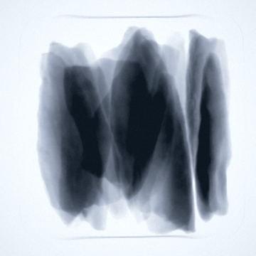
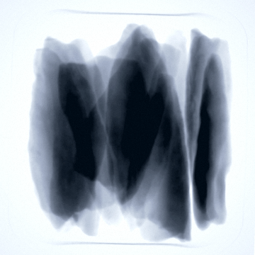
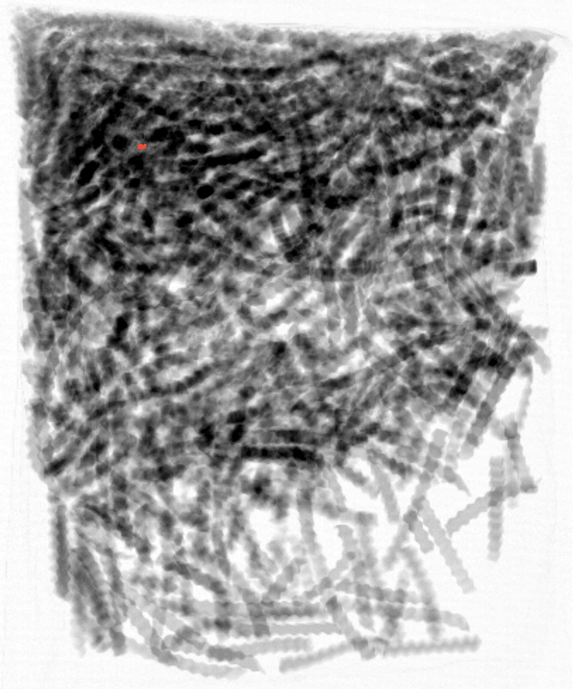
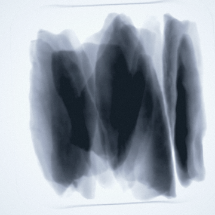
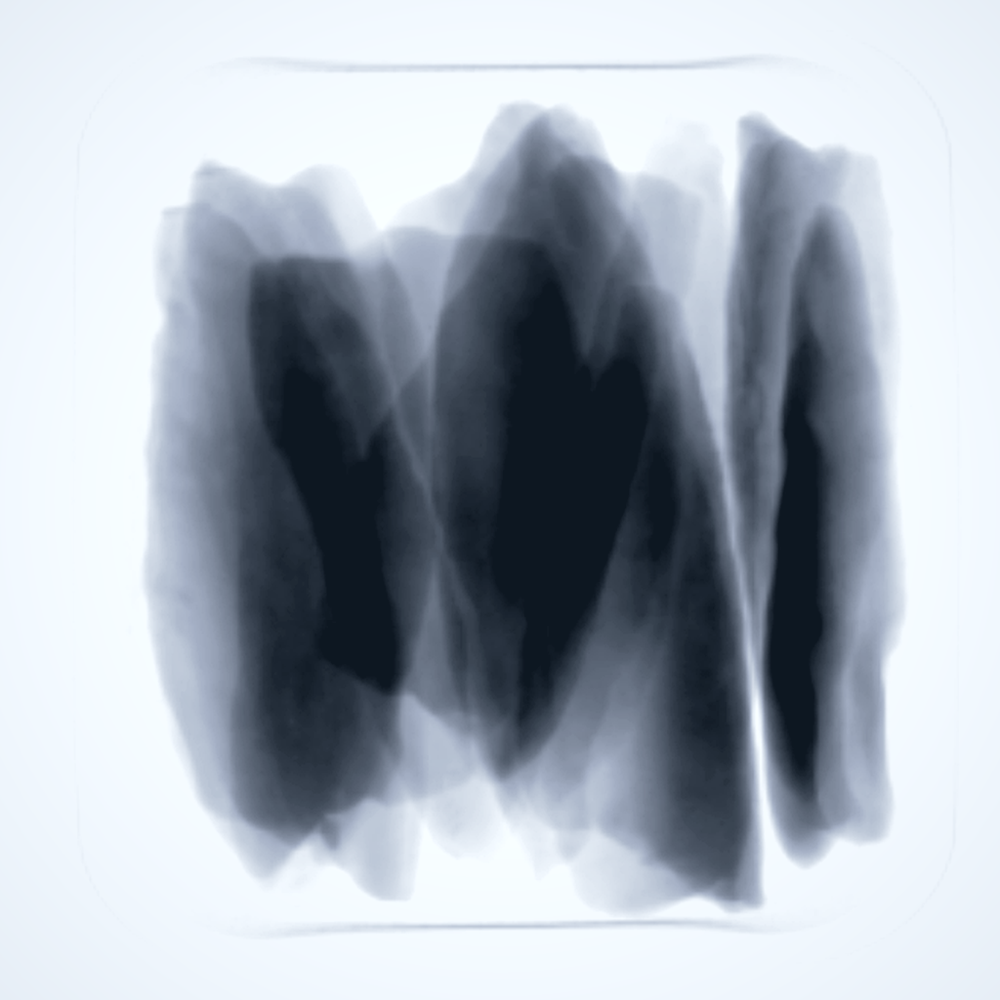

Will it work on our real product?
The model needs to be evaluated against real production images, including normal variation and edge cases, not only a few setup samples.
AI IMAGE ANALYSIS
Traditional inspection tools are often hand-configured around a small set of setup images. GreyscaleAI AI image analysis is built around customer-specific inspection images, so models can be trained, tested, compared, and improved against the real product variation running on the line.

Normal variation

 Quality signal
Quality signal


Foreign material risk

WHY BUYERS CARE
Food producers do not run perfect demo samples all day. They run products that vary by lot, supplier, temperature, moisture, shape, density, fill, packaging, line speed, and setup conditions. Useful AI has to handle that real variation, not just perform well on a small set of staged examples.
The model needs to be evaluated against real production images, including normal variation and edge cases, not only a few setup samples.
Before a model affects production behavior, customers need to review expected performance, likely false positives, likely missed conditions, and example detections.
AI can surface repeatable quality patterns that are hard to define with simple thresholds, especially when the issue is visual, variable, or product-specific.
WHY AI CHANGES THE INSPECTION PROBLEM
Traditional inspection can be effective when the target is simple, consistent, and easy to express as a rule. Many food quality and package conditions are not like that. They involve subtle patterns, natural product variation, and conditions that change across products, lots, shifts, and lines.
THE IMAGE LIBRARY ADVANTAGE
GreyscaleAI stores customer inspection images and event history in Insights. Over time, that creates a practical image library of the products, packages, line conditions, and variation the customer actually runs.
When a new or improved AI model is developed, that library can be used to back-check model behavior against real production images. Customers can review examples, understand what the model would have found, and discuss expected performance before changes are put into production.
That is different from tuning a system around a small sample set and hoping it behaves the same once the line changes. The model-development process is grounded in the customer’s own production evidence.
Historical production imagesNormal variation, rejects, edge cases, and product changes.
Candidate AI modelRun against prior image evidence before production rollout.
Expected performance reviewExample detections, likely misses, likely nuisance rejects, and customer discussion.
WHERE AI MATTERS MOST
GreyscaleAI AI can support foreign material workflows, but the biggest step change is often in product quality and package integrity. Many of those conditions cannot be handled effectively with traditional threshold-only tools because the difference between acceptable variation and a true quality issue is product-specific.
Classify conditions such as broken pieces, missing components, voids, clumps, malformed product, density variation, and internal structure when the product and image evidence support the application.
See Product Quality & Package IntegrityReview subtle conditions such as product-in-seal, seal-region variation, dents, open seals, and visible package checks where the image source and validation approach are a fit.
View Product-in-Seal ProofSupport classification of dense foreign material risks and difficult product-specific signals, such as separating true bone concerns from normal product variation where the application supports it.
See Foreign Material DetectionUse image history to find repeatable quality patterns across products, lots, shifts, lines, or plants that were not previously measured as dedicated inspection signals.
See Production AnalyticsWHY GREYSCALEAI IS DIFFERENT
GreyscaleAI uses the customer’s own production image history to understand real product variation, not just staged samples or generic demo images.
Models are developed around defined inspection goals, such as bone risk, product-in-seal, dents, missing components, voids, clumps, count issues, or other validated signals.
New or improved models can be compared against prior production images so customers can understand expected behavior before production changes are deployed.
AI decisions connect to images, event metadata, production context, review status, alerts, and trends so teams can see what the model found and act with context.
PROOF EXAMPLES
Use these examples to show the kind of inspection problems where product-specific image analysis matters. Do not present these examples as universal guarantees. Detection and classification performance still depends on the product, package, target condition, line speed, image contrast, and validation approach.
AI models helped distinguish true bone concerns from cartilage, ligament, tendon, and normal poultry variation in a demanding protein application.
AI image analysis was applied to subtle seal-region inspection using real production rejects, clean-seal comparisons, and normal package variation.
A package-quality issue can be classified and tracked as a dedicated signal instead of being blended into a generic reject bucket.
CONNECTED TO INSIGHTS
The value of AI does not end at the reject. GreyscaleAI Insights connects the model output to the image, event details, machine context, production context, review activity, alerts, trends, and exportable evidence.

AI image analysis is not a universal promise to detect every possible condition. Performance depends on the product, package, target defect, image source, line speed, operating conditions, and validation approach. The right next step is to review the application against real product and production conditions.
Talk Through Application FitNEXT STEP
Share your product, package, line speed, inspection goals, and available image history. GreyscaleAI can help determine where AI image analysis is a fit, what evidence should be reviewed, and how model performance should be validated before production rollout.